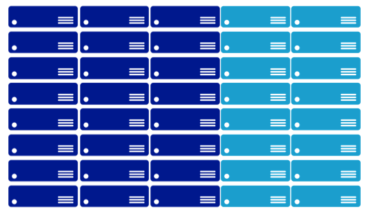
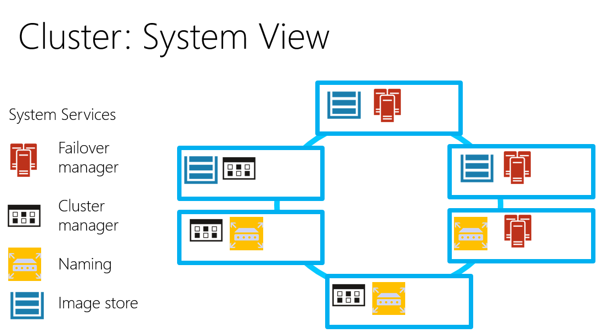

Go (5) JAZUG で Service Fabric の話をします
今週末、9/5のJAZUG5周年記念イベント「ごーごー じゃずゆーじー」 Go(5) JAZUGで、Azure Service Fabric[1]をネタに酒井さんと話をします。宣伝とメモを兼ねてちょっと予告編です。興味を持たれた方は是非ご来場下さい ↓click↓
Azure Service Fabric とは
Azure Service Fabric は、BUILD 2015 に先駆けて発表された、「スケーラブルで信頼性が高く管理しやすいクラウド向けアプリケーションの構築向けの分散型システム プラットフォーム」[2]です。
2015/4/20 に、Mark Russinovich が書いたBlog[3]、翻訳[4]から引用します。
- Service Fabric は、高度な制御プラットフォーム
- 開発者や ISV は、拡張性とカスタマイズ性の高いクラウド サービスを構築可
- ミッションクリティカルなクラウド サービスを提供してきたマイクロソフトの経験を基礎として開発
- 5 年以上にわたって実際に運用
- 基盤となるテクノロジは、Azure のコア インフラストラクチャに使用（実証済）
- Skype for Business、Intune、Event Hubs、DocumentDB、Azure SQL Database 、Bing Cortana などの基盤で利用
- 毎秒 5 億回を超える評価に対応可能な拡張性を持つ
ざっくりまとめると、「マイクロソフトでAzureのインフラとして5年以上使っている技術がベースにとなっていて実績もいろいろあるよ」ってことのようです。これまでのAzureだとCloud Native アプリケーションの Computing は、Cloud ServiceあるいはApp Serviceでということでしたが、新しい選択肢としてService Fabricというのが出てきたってことです。（まだ、preview でローカルの開発環境でしか動きませんが）
※ここでは、便宜上WebRole/WorkerRole を使うCloud ServicesをPaaSv1と呼び、それに対して、Service Fabric をSForPaaSv2と呼びます。
BUILD 2015のセッション[5],[6]や、ドキュメントを見ると機能が結構盛りだくさんなのですが、「SFが取り組んで問題は何なのか、何故必要なのか？」というのが分かりずらい、面白そうだけど、ﾍ(ﾟдﾟ)ﾉ ﾅﾆｺﾚ?って感じもします。
9/5 のセッションでは、Service Fabricが出てから既に、4カ月以上経っているし、「Azure Service Fabric とは」的な内容はさくっと流して、私が感じていたSFに対する疑問に焦点を当てて話をしてみようと思います。
Service Fabricが取り組んでいる課題
課題ですね、英語だとChallengeです。無理筋なのをやるとダメなやつですが、ここでは関係ありません。クラウド時代に突入してモダンなサービスは可用性とスケーラビリティを求められるようになりました。[7]
その結果、Cluster アプリケーションでは複数のマシンに配置されることになります（つまり分散、分割）。複数台で構成されているので障害時に全停止せず、台数を増やせば処理能力が増えてスケールすると言うのが基本的なストーリーです。
この考えに沿ったアーキテクチャの典型が、PaaSv1です。WebRole/WorkerRole を複数の障害ドメインのマシンに配置することで耐障害性を担保し、アプリケーションをステートレスにすることで、台数増加を性能向上に直結させ (Immutable Infrastructureってやつです) 、高可用でスケーラブルなサービスを構築するというのが物語の粗筋です。
これはこれで良いのですが、PaaSv1では、全てのRoleは仮想マシンを専有するような配置を行います。そのため、OSの設定やランタイムのインストールなど細かいことを自由にできるという大きなメリットがありますが「問題もあるよね」というのが今回の話しです。SFが、取り組んでいる課題はいろいろあるのですが、今回はこの配置に関する課題の話をします。
Static Partitioning 問題
PaaSv1では、Role毎に台数を増減できますが、複数のWebRoleを同一の仮想マシンで動かすことはできません。また、WebRoleとWorkerRoleを同一仮想マシンでホストすることもできません。[8]このようにRoleの分割が静的に行われているのを、Static Partitioning （静的分割？）と言います。Static Partitioning は、Role を増やせば、増すほど扱いづらくなりますし、ワークロードによっては事前に予測することが難しい場合もあり、リソースの利用効率という観点からはムダが生じやすい仕組みで、これは大きな課題ですね。
Static Partitioning はシンプルなせいか、Cluster アプリケーションで広く使われてきました。最初のHadoop とか、昔の twitter とかですね。その結果あちこちから問題が聞こえてくるようになりました。その課題の解法の1つとして注目されているのが、Apache Mesos などで導入された手法です。 Mesosだと、このドキュメントが面白いですBuilding and Deploying Application to Apache Mesos、ちょっと引用します。
Mesos 以前は、Static Partition（静的分割）だった。Static Partition（静的分割）IS BAD、とても扱いづらい。
- マシンの効率的な利用ができない
- 効果的なスケールが出来ない
- 障害の取り扱いが難しく、ダウンタイムの発生を招く
リンク先には、「動的リソース割り当てが必要だ。 Operating System === Datacenter で、Mesos => data center のkernelだ」というようなことが書いてあります。Hadoopも、台数増えてくると十分Nodeが働かないという問題がありました。[9]
確かにサービスを構成するアプリケーションを複数のコンポーネントに分けた場合、（例えばWeb Frontと、管理サイト、日時バッチ、月次バッチとか）。それぞれ、ワークロードも違えば、開発サイクルも違う。これを、クラスターに最適配置しようとするといろいろメンドクサイ。PaaSv1で、現実的な解はRoleを分けることですが、月次バッチはWebFrontのオフピークの夜間にして効率的な運用をなどを考えると面倒なことになってくる・・・
Dynamic Partitioning
Mesosから離れて、Service Fabric でどうしているのかを見てみます。 Service Fabric では、複数のNodeでクラスターを構成して、アプリケーションは同一Node内に複数配置することができます。どのように配置するかは、アプリケーションが要求を出して、配置条件にあたところにService Fabric が配置するという流れです。配置条件は、サービス マニフェストまたはアプリケーション マニフェストを使用するか、コード内で直接定義します。[10]
Node内に複数のアプリケーションを配置することができ、リソースの有効利用を実現します。YARNとかMesosとかも同じようなことができます。このあたりの考え方は最近のトレンドのようです。
Cluster Manager [11]
このように、Datacenetrから仮想マシンをまとめて借りだして Cluserとしてプールし、アプリケーションの要求に応じてリソースを割り当てるのコンポーネントを、Cluster Managerと呼びます。（最近のクラウド界隈は、混沌としているので名称はちょっと曖昧さがあるけど）代表的なCluster Managerを、Service Fabric も含め上げておきます。Hadoop MRv1 では JobTrancker がボトルネックとなって働かない Node 問題が発生しており、YARNが対策として作成されました。いずれの、Cluster Manager (YARN では、Resource Managerと呼ぶ）も、万単位のサーバーを扱うの前提で作成されているので完全に１つのリソースプールに全部入れてしまって、そこからリースするような使い方でも行けそうです。
最後に
こんな感じで、Service Fabricがアプリケーションをクラスターに配置してくれるので、リソースとアプリケーションの分割の関係を柔軟に構成することができます。ワークロードと配置の関係をコード外でコントロールできるのは、なかなか嬉しい感じです。今回は時間の都合上入れられないと思いますが、開発支援、運用支援の機能もService Fabricには盛り込まれていて、かなり拾い範囲をサポートした分散型システム プラットフォームと言えそうです。
ソフトウェアの基本は、「分割して統治せよ」だと思いますが、残念ながら分割にはもろもろのメリットとデメリットがあり、過剰な分割はデスマーチの元という面もありました。Service Fabricは、今風に多くの問題を解決し次世代クラウドアプリケーションの作成に役立ってくれそうで
※Spark は、複数のCluster Managerに対応していて、これはこれで面白いと思います。
| [1] | Service Fabric の概要 |
| [2] | Service Fabric ドキュメント |
| [3] | Announcing Azure Service Fabric: Reducing Complexity in a Hyper-scale World |
| [4] | 翻訳：Azure Service Fabric を発表: 高度なスケーラビリティをより簡単に実現 |
| [5] | BUILD 2015, Mark Russinovich, The Next Generation of Azure Compute Platform with Mark Russinovich |
| [6] | BUILD 2015, Gopal Kakivaya, Microsoft Azure Service Fabric Architecture |
| [7] | クラウドだから可用性とスケーラビリティを求められるのか、両者が求めらるからクラウドなのかは ニワトリと卵の関係のような気もします。クラウドによって、いくつかの面でコストが抑えられるようになったので、現実的なビジネスでの適応局面が増えたという言い方もできるます。 |
| [8] | WebRole で複数Siteを定義すれば複数Endpoint Hostできます、また、WebRoleのRoleEntryPointのRunをoverride するとWorkerRole的なことが出来たりします。これらの方法の課題はアプリケーション間が無用に密接にくっついてしまっていることです。できるけど、イマイチやなという感じです。 |
| [9] | YARN の紹介 |
| [10] | サービス記述の概要 |
| [11] | Cluster manager |
| [12] | クラスターの説明 |